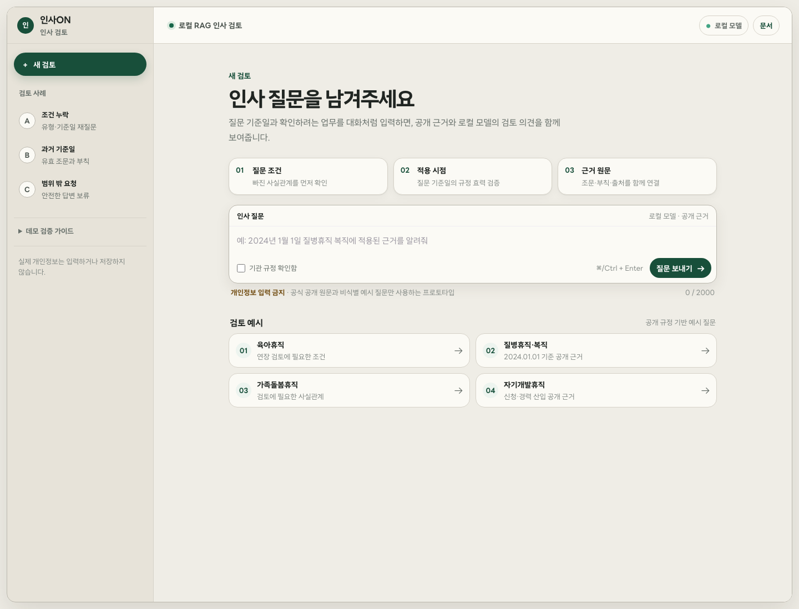
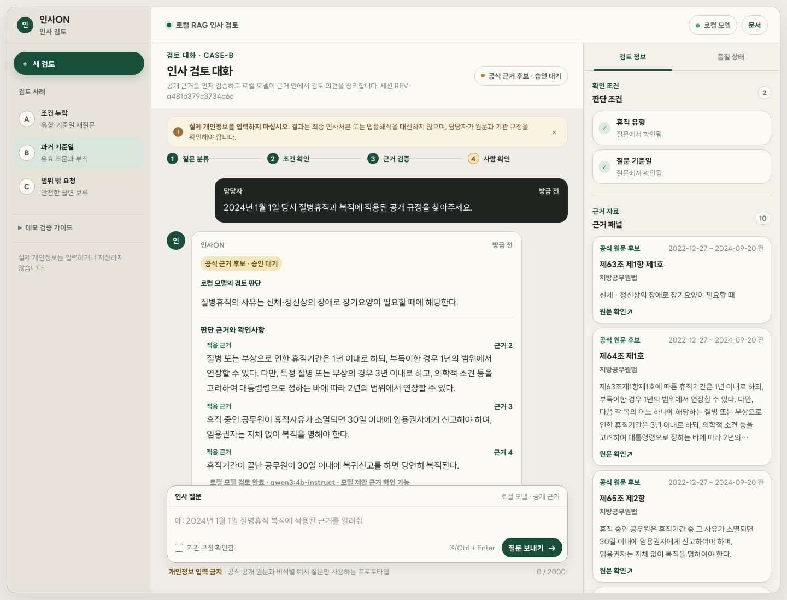
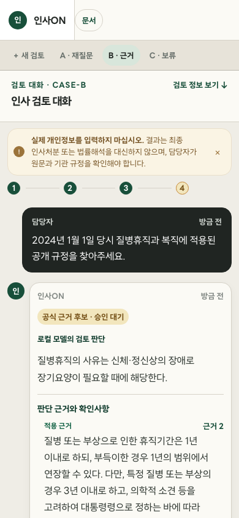

Problem
짧은 업무 질문만으로는 적용 규정이 결정되지 않는다.
휴직 유형, 대상자 조건, 질문 기준일, 과거 사용 기간과 기관 규정 확인 여부가 달라지면 검토 근거도 달라진다. 단순 검색이나 자유 생성형 챗봇은 이 누락을 감춘 채 결론부터 만들 위험이 있다.
Local RAG · Human-reviewed HR support
인사ON은 지방공무원 휴직·복직 질문에서 누락 조건을 먼저 확인하고, 질문 기준일에 유효한 공개 근거를 연결하는 인사담당자용 검토 지원 프로토타입이다.
포트폴리오 공개 범위는 합성 사례와 공개 가능한 집계 자료로 제한한다. 최종 인사처분·법률해석·실제 개인정보 처리는 제품 범위가 아니다.
01 · PLAN
처음 세운 계획
기존 계획 HTML은 Persona → Problem → Solution → Technology → Validation → Outcome 순으로 문제와 구현 가설을 정리했다. 일정이 부족해도 기준일 검색, 인용 검증, 답변 보류와 평가 재현성은 줄이지 않는다는 원칙을 먼저 고정했다.
Problem
휴직 유형, 대상자 조건, 질문 기준일, 과거 사용 기간과 기관 규정 확인 여부가 달라지면 검토 근거도 달라진다. 단순 검색이나 자유 생성형 챗봇은 이 누락을 감춘 채 결론부터 만들 위험이 있다.
Product principle
모든 요청은 ANSWERABLE, REVIEW_REQUIRED, INSUFFICIENT_EVIDENCE 중 하나로 종료한다. ANSWERABLE도 최종 판단이 아니라 공개 근거를 갖춘 검토 재료다.
02 · CHANGE
구현 중 바뀐 결정
구현 과정에서 편의보다 재현성과 안전 경계를 우선했다. 아래 변경은 회고가 아니라 ADR, phase 상태와 실행 artifact에 남아 있는 실제 결정이다.
일반적인 RAG 기준선을 먼저 가정했다.
FTS5 기본 tokenizer보다 띄어쓰기 변형과 법령 표현 회수가 안정적이었다. 결과는 기술 선택용 개발 spike로만 사용했다.
생성·임베딩·재랭킹을 빠르게 붙일 수 있지만 계정과 비용, 데이터 경계가 남았다.
Ollama loopback에서 generation·embedding·reranking을 연결하고, 정근수당은 answer-v7 제약 출력과 결정적 계산·인용 검증을 함께 기록했다.
연혁·구조화 데이터에 유리하지만 인증키가 재현성의 필수조건이 될 수 있었다.
current 자료 13종과 기준일 재현용 과거 버전 4종을 keyless exact allowlist로 수집했다. metadata-only 1종을 제외한 본문 16종·12,640개 조문을 파싱했지만 사람 원문 대조 전에는 승인 index로 승격하지 않는다.
답변 결과를 중심으로 한 화면이었다.
design-agent로 세 방향을 비교한 뒤 선택한 Case Workbench를 기준으로 CASE 목록, 대화, 조건, 근거와 검토 노트를 한 흐름에 결합했다.
공식 corpus, 독립 정답셋, pilot, 넓은 근거 검색, 디자인 검증과 휴직 파생 정근수당까지 14 phase로 관리했다.
승인자·독립 평가자·실제 배포 증거가 없으므로 phase 07~09의 미완료 gate를 그대로 남겼다.
03 · BUILD
어떻게 구현했는가
FastAPI 기반 모듈러 모놀리스에서 domain, application, adapter, API, Web UI와 evaluation을 분리했다. 로컬 모델을 교체해도 조건·시간·인용 검증 계약은 바뀌지 않는다.
개인정보·범위 밖 요청을 모델 전에 종료
휴직 유형·복직·지원 범위 판별
출처와 충돌 상태가 있는 구조화 조건
필수 조건이 없으면 결론 생성 금지
기준일·대상에 맞는 valid_time 후보만 통과
문자 2-gram·BGE-M3·RRF·재랭킹
Qwen3가 판단·권고 상태·근거 역할을 구조화
source ID·효력·예외·schema 재검사 후 공개
04 · PRODUCT
결과물
첫 화면은 질문 입력을 우선하고, 답변 뒤에는 확인 조건·유효 근거·기관 규정 상태와 한계를 같은 시야에서 확인한다. 합성 원문은 실제 링크처럼 위장하지 않는다.

시스템 품질 수치와 근거 rail은 첫 질문 전에는 숨긴다. 사용자는 범위를 이해하고 질문을 시작하며, CASE-A/B/C와 PAY-01은 재질문·근거 연결·답변 보류·결정 계산을 빠르게 검증하는 보조 탐색이다.
휴직 유형이나 질문 기준일이 없으면 가능·불가능을 생성하지 않고 필요한 조건부터 묻는다.
검증 포인트 · 누락 조건 → 재질문2024년 1월 1일에 유효한 공식 과거 조문·단서·부칙을 연결하고 미시행 후보는 제외한다. candidate 승인 전이므로 최종 상태는 REVIEW_REQUIRED다.
검증 포인트 · valid_time → 인용지원하지 않는 직군·기관 내부 규정으로 최종 처분을 요구하면 근거 부족 사유와 함께 보류한다.
검증 포인트 · 안전한 abstention모든 질문을 필수 사실·승인된 통상 가정·명시 예외로 나눈다. 정근수당은 첫 등록 사례이며, 날짜·기간은 직접 확인하고 예외 없음만 가정해 6개월·100% 조건부 계산과 공식 교차 근거 4건을 연결한다.
검증 포인트 · 필수 사실 → 가정 공개 → 예외 우선

05 · VERIFY
어떻게 검증했는가
B0 lexical, B1 vector, H1 hybrid, H2 시간·대상 필터, H3 재랭킹·문맥 확장을 동일한 60건 합성 시스템 회귀셋에서 비교했다. 아래 값은 법률 정확도가 아니다.
| 구성 | Set Recall@5 | 상태 정확도 | 인용 완전성 | 위험 답변률 | 치명적 오류 |
|---|---|---|---|---|---|
| B0 | 0.333 | 0.314 | 0.000 | 0.000 | 0 |
| B1 | 0.139 | 0.314 | 0.000 | 0.000 | 0 |
| H1 | 0.250 | 0.314 | 0.000 | 0.000 | 0 |
| H2 | 1.000 | 0.943 | 0.759 | 0.000 | 8 |
| H3 | 0.944 | 0.943 | 0.931 | 0.000 | 0 |
시간·대상 필터만으로는 결론을 바꿀 단서·부칙 문맥을 모두 회수하지 못했다. 실패 사례는 공개 오류 분석에 보존했다.
재랭킹과 문맥 확장 뒤 합성 fixture의 결정적 예외를 회수했다. 실제 법령 전체에 대한 일반화는 주장하지 않는다.
인사 전 영역으로 corpus를 넓히며 주제마다 부칙 조문이 생겼다. 부칙이 8건이 되자 "부칙과 예외를 함께" 찾는 질문에서 그 단어의 변별력이 사라졌고, 재랭커가 육아휴직 본문 대신 보수·수당 부칙을 올린다. 수치를 맞추려 corpus에서 부칙을 빼지 않았다.
평가를 대화 단위로 바꾸자 4건이 드러났다. "질병휴직은요?" 같은 생략형 후속 발화에서 앞 턴의 과업이 유지되지 않아 조건을 처음부터 다시 묻는다. B0부터 H4까지 0/4이며 검색 구성과 무관하다. 틀린 답을 만드는 대신 더 묻는 방향이라 게이트를 푸는 식으로 고치지 않았다.
06 · HARNESS
계획 대비 현재 상태
자동화로 끝낼 수 있는 phase 00~06, phase 07의 수집 단계, 넓은 근거 검색과 디자인 검증과 official-only local 제품 경로는 완료했다. 사람 승인과 독립 검토가 필요한 단계는 mock으로 채우지 않고 blocked로 남겼다.
패키지, 도메인 타입, 평가 schema
COMPLETED수집·계층 파서·시간 저장소
COMPLETEDlexical 선택·B0~H3 구조
COMPLETED개인정보·조건·결정적 규칙
COMPLETEDorchestrator·API·챗봇 UI
COMPLETED60건 합성 회귀·release gate
COMPLETEDQwen3·BGE-M3·local E2E
COMPLETED수집 완료 · 사람 원문 승인 필요
BLOCKED승인 index·독립 검토자 필요
BLOCKEDlegal release·배포·참여자 필요
BLOCKED공식 source·8개 topic 안전 routing
COMPLETED3개 방향·B 선택·반응형 rollout
COMPLETED공식 candidate·과거 CASE-B
COMPLETED전체 vector·6개월/100%·교차 인용 4건
COMPLETED필수 사실·승인 가정·명시 예외 분리
COMPLETED07 · LIMITS
한계와 다음 단계
현재 코드가 준비되었다고 해서 법령 corpus, 정답셋, 사람 승인과 운영 효과까지 완료된 것은 아니다. 다음 단계는 모델 튜닝보다 증거 수준을 높이는 일이다.
4,106 provision candidate와 자동 구조 감사는 준비됐지만 독립 reviewer의 원문 대조·승인 hash가 없다.
다음 · Phase 07 semantic promotion합성 회귀는 안전 파이프라인을 검증할 뿐 법률 정답을 대신하지 않는다. 작성자·검토자·adjudicator를 분리해야 한다.
다음 · Phase 08 locked legal set페르소나는 역할 가설이며 실제 인터뷰·동일 과제 관찰 결과가 없다. 사용성 결과를 법률 정확도로 해석해서도 안 된다.
다음 · 합성 과제 기반 shadow session단일 VM·Caddy·Ollama loopback 계약은 있지만 legal release 전 production 시작을 차단한다.
다음 · 승인 index와 deployment smoke인사ON은 질문을 분류하고, 조건을 확인하고, 기준일의 근거를 찾고, 결정적 검증을 통과한 내용만 설명한다. 근거가 부족하면 보류하고 최종 판단은 담당자에게 남긴다. 이 경계를 제품·코드·평가·UI에서 같은 방식으로 구현한 것이 이 프로젝트의 결과다.